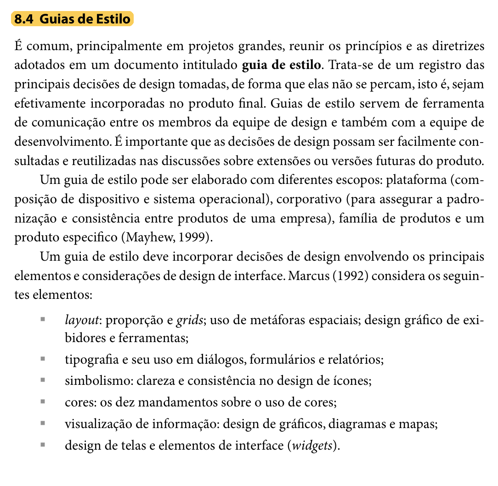
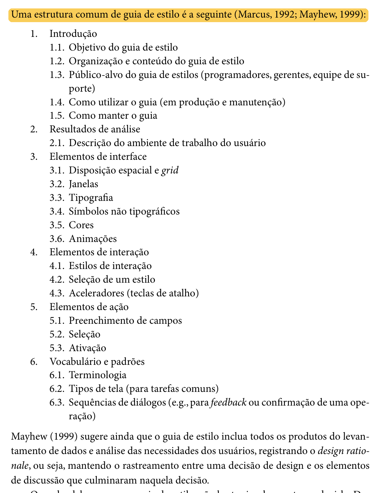

Tabela de Contribuição
| Membro | Contribuição |
|---|---|
| Leonardo da Silva Lopes Júnior | Concepção, fundamentação teórica (Mayhew, 1999; Marcus, 1992; Barbosa e Silva, 2010), estruturação formal dos itens 15, 16 e 17 com inclusão dos recortes bibliográficos do livro (Figuras 1 e 2), especificação completa das 6 seções normativas do Guia de Estilo (Introdução, Resultados de Análise, Elementos de Interface, Elementos de Interação, Elementos de Ação e Vocabulário), inclusão do padrão antitrapaça de download, paleta auditada WCAG 2.1 e demonstração de correspondência com o portal PCI Concursos. |
| Daniel da Silva Batista | Revisão técnica da coerência metodológica com o ciclo de Mayhew e alinhamento com as metas de usabilidade. |
| Pedro Rocha Ferreira Lima | Revisão da conformidade visual com os achados de análise de requisitos e padrões de acessibilidade. |
| Gemini | Auxílio na estruturação textual, organização dos códigos de cores, diagramação em Markdown e checagem de conformidade com o checklist de IHC (conforme Política de Uso de IA). |
Fonte: Leonardo da Silva Lopes Júnior (2026).
Guia de Estilo — PCI Concursos
Introdução
Este documento apresenta o Guia de Estilo para o reprojeto do portal PCI Concursos (pciconcursos.com.br), elaborado para a Entrega 3 da disciplina de Interação Humano-Computador da Universidade de Brasília (SALES, 2026).
No modelo de ciclo de vida da Engenharia de Usabilidade proposto por Deborah Mayhew (1999), adotado pelo Grupo 07 em seu Processo de Design, a fase de Análise de Requisitos tem como um de seus principais produtos a elaboração do guia de estilo. Esse documento sintetiza e operacionaliza as diretrizes, princípios de IHC e metas de usabilidade derivados da análise de tarefas, do perfil de usuário e das possibilidades e limitações da plataforma, garantindo que as decisões de design sejam mantidas e reflitam no produto final de forma consistente (BARBOSA; SILVA, 2010, p. 109-110, 282).
1. Fundamentação Teórica
1.1 O que é um Guia de Estilo
Segundo Barbosa e Silva (2010, p. 282), é prática comum, sobretudo em projetos de grande escala ou em reprojetos de sistemas complexos, reunir os princípios e as diretrizes adotados em um documento formal intitulado guia de estilo. Esse documento atua como o registro central das principais decisões de design concebidas pela equipe, impedindo que se dispersem ao longo do ciclo de vida e assegurando que sejam fielmente incorporadas à interface final.
Além disso, os autores destacam que os guias de estilo desempenham um papel fundamental como ferramenta de comunicação entre os designers de interação, desenvolvedores front-end, redatores e mantenedores do sistema, permitindo que soluções consolidadas sejam consultadas e reaproveitadas em extensões e versões futuras. Conforme apontado por Mayhew (1999), um guia de estilo pode abranger quatro escopos: 1. De plataforma: restrito às convenções do sistema operacional e hardware; 2. Corporativo: padronização entre diversos produtos de uma mesma instituição; 3. De família de produtos: regras comuns a uma suíte de softwares integrados; 4. De um produto específico: escopo este adotado formalmente neste projeto, focado nas particularidades e fluxos do PCI Concursos.
A Figura 1 reproduz o trecho da literatura (Seção 8.4, p. 282) que fundamenta a definição e a importância do guia de estilo.
Figura 1: Referência Bibliográfica — Definição e Importância de Guia de Estilo

Fonte: BARBOSA e SILVA (2010, p. 282).
1.2 Estrutura Canônica do Guia de Estilo
Para garantir abrangência, rigor técnico e conformidade acadêmica, Barbosa e Silva (2010, p. 283) sintetizam a estrutura clássica proposta por Marcus (1992) e Mayhew (1999) para a composição de guias de estilo. Essa estrutura organiza as decisões de design em seis seções fundamentais:
- Introdução: define o objetivo do guia, sua organização interna, o público-alvo (programadores, gerentes, equipe de suporte, designers), diretrizes de uso tanto na produção quanto na manutenção e procedimentos para mantê-lo atualizado;
- Resultados de análise: registra a descrição do ambiente de trabalho do usuário (condições físicas, contextuais e técnicas de uso identificadas no perfil do usuário e na plataforma) e metas de usabilidade;
- Elementos de interface: padroniza a disposição espacial e grid de tela, comportamento de janelas e modais, tipografia institucional, símbolos não tipográficos (ícones e marcas), paleta de cores e animações/transições;
- Elementos de interação: especifica os estilos de interação suportados (menus, busca, links), a justificativa da seleção dos estilos predominantes e aceleradores (teclas de atalho e acessibilidade);
- Elementos de ação: padroniza os mecanismos de preenchimento de campos em formulários, elementos de seleção (dropdowns, checkboxes, rádios) e mecanismos de ativação (botões e acionadores);
- Vocabulário e padrões: estabelece a terminologia oficial e compreensível para os termos de domínio, os tipos de telas para as tarefas comuns e as sequências de diálogos (mensagens de confirmação, avisos de erro e feedback).
Adicionalmente, Mayhew (1999) recomenda explicitar o design rationale (a justificativa de cada decisão), assegurando o rastreamento direto entre os problemas levantados nas etapas anteriores e os elementos de interface projetados. A Figura 2 ilustra o trecho da literatura (Seção 8.4, p. 283) que estabelece essa divisão estrutural.
Figura 2: Referência Bibliográfica — Estrutura Canônica de Guia de Estilo

Fonte: BARBOSA e SILVA (2010, p. 283).
2. Estrutura Normativa do Guia de Estilo
A seguir, apresentam-se as decisões de design do novo PCI Concursos organizadas rigorosamente segundo os seis eixos normativos da literatura (MARCUS, 1992; MAYHEW, 1999; BARBOSA; SILVA, 2010).
1. Introdução
1.1 Objetivo do guia de estilo
O objetivo deste Guia de Estilo é estabelecer os padrões normativos de interface, diretrizes de usabilidade, convenções de interação e vocabulário controlado para o reprojeto do portal PCI Concursos. Este documento serve como referência técnica e projetual para a equipe do Grupo 07 durante a elaboração dos protótipos de baixa fidelidade (Protótipo de Papel / Nível 1) e alta fidelidade (Figma / Nível 3), garantindo que as metas de usabilidade definidas na fase de Análise de Requisitos sejam cumpridas e que o sistema ofereça uma experiência de uso consistente, segura, transparente e despoluída aos concurseiros e estudantes de todo o país.
1.2 Organização e conteúdo do guia de estilo
O guia está estruturado em estrita conformidade com as diretrizes consolidadas de IHC, dividindo-se em: * Resultados de análise: contextualização do ambiente físico, técnico e cognitivo do usuário, requisitos das personas e metas de usabilidade; * Elementos de interface: normas de grid responsivo modular, janelas/modais, tipografia de alta legibilidade, iconografia padronizada, paleta cromática auditada (WCAG 2.1) e animações suaves; * Elementos de interação: estilos de diálogo homem-máquina, critérios de seleção de estilos e atalhos de acessibilidade; * Elementos de ação: padrões para preenchimento de formulários, seleção de itens, hierarquia de ativação de botões e o padrão antitrapaça de download; * Vocabulário e padrões: glossário oficial de concursos públicos, padrões estruturais de telas e sequências de diálogos com feedback imediato; * Correspondência com o site avaliado: demonstração ponto a ponto da aderência das decisões à resolução dos diagnósticos empíricos do PCI Concursos.
1.3 Público-alvo
Este guia destina-se aos seguintes papéis envolvidos no projeto: * Designers de Interação e Avaliadores (Grupo 07): responsáveis por conceber os protótipos e inspecionar conformidades ergonômicas; * Desenvolvedores Front-end: responsáveis pela codificação fiel dos componentes visuais, respeitando tokens de cor, espaçamentos e acessibilidade; * Analistas de Usabilidade e Acessibilidade: responsáveis por auditorias heurísticas e testes com usuários; * Gestores Editoriais e Conteudistas: responsáveis pela publicação de editais, videoaulas, simulados e comunicados oficiais.
1.4 Como utilizar o guia
- Em produção (projeto e desenvolvimento): deve ser consultado obrigatoriamente antes da criação de qualquer novo fluxo, componente ou tela, servindo como especificação normativa para escolha de cores, tamanhos de fonte, espaçamentos, áreas de toque e mensagens de erro;
- Em manutenção e avaliação: serve como checklist de referência durante avaliações heurísticas, testes de usabilidade e auditorias de acessibilidade, orientando correções rápidas de divergências visuais e comportamentais.
1.5 Como manter o guia
O guia deve ser revisado de forma iterativa ao final de cada ciclo de avaliação com usuários (Etapas 5 e 7). Quaisquer modificações em decisões de design devem ser registradas no histórico de versão do documento, acompanhadas de seu respectivo design rationale (a justificativa da alteração embasada nos dados observados nas avaliações empíricas).
2. Resultados de Análise
2.1 Descrição do ambiente de trabalho do usuário
Com base no Perfil do Usuário consolidado na Etapa 2 e nas análises documentais (DOC-01 a DOC-04), identificou-se que o público do PCI Concursos caracteriza-se por: * Dispositivos e Resoluções: Uso heterogêneo entre smartphones (telas de 5 a 6,7 polegadas em trânsito, ônibus e intervalos de trabalho sob redes 4G/5G oscilantes) e computadores desktop/notebooks (monitores de 13 a 24 polegadas em casa ou escritórios). O layout deve assegurar legibilidade sem depender de zoom manual; * Condições de Iluminação e Fadiga Ocular: Variações extremas desde leitura sob sol intenso em pontos de ônibus até sessões noturnas prolongadas de estudo em quartos com iluminação reduzida, justificando a oferta indispensável de modo escuro com alto contraste; * Carga Cognitiva e Estresse Temporal: Concurseiros estudam sob pressão de datas limites de inscrição e prazos curtos de intervalos de descanso. A interface deve eliminar anúncios piscantes e concorrentes, priorizando respiro visual e clareza informativa; * Conectividade: Grande parcela dos acessos móveis dá-se sob planos limitados de dados móveis, exigindo carregamento leve de ativos, ausência de scripts desnecessários e zero salto de layout (Zero CLS).
2.2 Requisitos derivados das personas e análise documental
As quatro personas modeladas no projeto orientam diretamente as escolhas de interface: * Maria Helena dos Santos (PER-01 — 53 anos, Concurseira Ativa e Cautelosa): Sofre com ardência visual ao ler na tela e quase clicou em botões verdes falsos de "DOWNLOAD" de propagandas no teste real (USR-01 / CEN-02). $\rightarrow$ Demanda botões oficiais de download isolados de anúncios e contraste elevado. * Lucas Ferreira Rocha (PER-02 — 24 anos, Iniciante Dinâmico): Precisa localizar editais abertos no DF sem ter que rolar dezenas de páginas de cidades do interior de outros estados (CEN-03). $\rightarrow$ Demanda chips reativos de filtragem por UF no topo da tabela. * Thiago Moraes Albuquerque (PER-03 — 21 anos, Estudante Universitário): Utiliza smartphones no transporte público e busca simulados e vagas de estágio, mas perdeu o progresso das questões e confundiu-se com termos ambíguos de estágio probatório (CEN-05 e CEN-06). $\rightarrow$ Demanda alvos de toque aumentados (44x44px), modo foco e busca inteligente com desambiguação semântica. * Renata Cristina Freitas (PER-04 — 31 anos, Analista Administrativa CLT): Assiste a videoaulas no intervalo de almoço no celular e cadastrou e-mail para receber vagas, mas foi bombardeada por mensagens genéricas de prefeituras distantes (CEN-07 e CEN-08). $\rightarrow$ Demanda player móvel que não sobreponha anúncios aos controles no modo paisagem e newsletter com filtros por UF e carreira, com saída em 1 clique (LGPD).
2.3 Metas de usabilidade do projeto
Conforme preconizado por Mayhew (1999) e Barbosa e Silva (2010), o guia operacionaliza as seguintes metas de usabilidade: 1. Segurança no Uso: Eliminação total de armadilhas visuais e anúncios enganosos que induzam o usuário a baixar arquivos maliciosos; 2. Eficácia: Garantia de que concurseiros e estudantes encontrem o edital, videoaula ou prova desejada em menos de 3 minutos de navegação; 3. Eficiência: Redução drástica do tempo de resposta das consultas mediante carregamento assíncrono e filtros reativos; 4. Facilidade de Aprendizado (Learnability): Menus simplificados em 4 agrupamentos funcionais com ícones autoexplicativos; 5. Acessibilidade Universal (WCAG 2.1 AA): Garantia de contraste mínimo de 4.5:1 para texto normal, 3:1 para componentes de interface e áreas de toque mínimas de 44x44px.
3. Elementos de Interface
3.1 Disposição espacial e grid
- Sistema de Grid: Baseado em 12 colunas no desktop (largura máxima centralizada de 1280px), 8 colunas em tablets e 4 colunas no mobile, estruturado sobre uma escala modular de múltiplos de 8 pontos (8pt Grid System);
- Margens e Calhas (Gutters):
- Desktop: margens externas de 32px e calhas de 24px;
- Tablet: margens externas de 24px e calhas de 16px;
- Mobile: margens externas de 16px e calhas de 12px;
- Tokens de Espaçamento:
$space-xxs: 4px(microajustes);$space-xs: 8px(padding interno de tags e badges);$space-sm: 16px(padding interno de cartões e inputs);$space-md: 24px(gutter de colunas e distância entre campos);$space-lg: 32px(respiro entre seções de conteúdo);$space-xl: 48px(raio protetivo antitrapaça de downloads);$space-2xl: 64px(respiro de rodapé).
3.2 Janelas e modais
- Modais de Diálogo: Reservados para ações focadas e de confirmação (ex.: confirmar descadastramento de e-mail, visualizar detalhes rápidos de uma questão de simulado ou exibir filtros avançados em telas móveis);
- Mecanismos de Saída: Todo modal deve oferecer três vias seguras de fechamento:
- Botão explícito "Fechar [X]" no canto superior direito (área mínima de 44x44px);
- Clique na máscara semitransparente externa (overlay com opacidade de 50%);
- Pressionamento da tecla
Escno teclado; - Controle de Foco (Focus Trap): Enquanto o modal estiver ativo, a navegação via
Tabdeve permanecer confinada exclusivamente aos elementos internos do modal.
3.3 Tipografia
Adotam-se famílias tipográficas sem serifa modernas, de excelente legibilidade em telas de alta e baixa densidade de pixels. A Tabela 2 apresenta a escala modular padronizada:
Tabela 2: Escala Tipográfica Padronizada do PCI Concursos
| Nível / Uso | Família Tipográfica | Tamanho | Peso | Altura de Linha (Line-height) |
|---|---|---|---|---|
| Título Principal (H1) | Inter, sans-serif | 32 px (Desktop) / 28 px (Mobile) | 700 (Bold) | 1.25 (40 px) |
| Título de Seção (H2) | Inter, sans-serif | 24 px (Desktop) / 22 px (Mobile) | 600 (Semi-bold) | 1.30 (32 px) |
| Título de Módulo (H3) | Inter, sans-serif | 20 px (Desktop) / 18 px (Mobile) | 600 (Semi-bold) | 1.35 (28 px) |
| Subtítulos e Destaques | Inter, sans-serif | 16 px | 500 (Medium) | 1.40 (22 px) |
| Corpo de Texto (Padrão) | Inter, sans-serif | 16 px | 400 (Regular) | 1.55 (24 px) |
| Rótulos e Metadados | Inter, sans-serif | 14 px | 500 (Medium) | 1.45 (20 px) |
| Legendas e Badges | Inter, sans-serif | 12 px (tamanho mínimo absoluto) | 600 (Semi-bold) | 1.40 (16 px) |
| Numerais e Protocolos | Monospaçada (ui-monospace, Consolas) |
14 px | 500 (Medium) | 1.40 (20 px) |
Fonte: Leonardo da Silva Lopes Júnior (2026).
3.4 Símbolos não tipográficos (ícones e marcas)
- Estilo Visual: Linhas geométricas limpas (outline), bidimensionais, com espessura uniforme de 2px e dimensões de base de
24 x 24 px(com versões de16 x 16 pxpara botões compactos); - Catálogo de Ícones Essenciais:
- 🔍 Lupa: Busca geral e acionamento de pesquisas;
- 📄 Documento PDF: Exclusivo para arquivos autênticos de provas e editais oficiais;
- 📍 Pin / Mapa: Tag de localização geográfica de concursos (ex.:
[📍 DF]); - 📅 Calendário: Prazos de inscrição e datas de provas objetivas;
- 🔔 Sino: Central de alertas de vagas e newsletters;
- ▶️ Play: Reprodução de videoaulas e dicas didáticas;
- ⚠️ Alerta: Retificações de editais e erratas de bancas;
- ♿ Acessibilidade: Vagas reservadas para Pessoas com Deficiência (PcD).
- Logotipo Oficial: Margem de respiro mínima equivalente à altura da letra "P". No cabeçalho escuro, utiliza-se obrigatoriamente a versão com tipografia branca (
pci_logo_white.png).
3.5 Cores
A paleta preserva a identidade visual consagrada do PCI Concursos (azul clássico), corrigindo os graves problemas de contraste anteriores. Todas as cores foram auditadas conforme o critério 1.4.3 da WCAG 2.1:
Tabela 3: Paleta Cromática Padronizada e Auditoria de Contraste
| Categoria | Nome do Token | Código Hexadecimal | Amostra | Uso Recomendado | Razão de Contraste | Nível WCAG |
|---|---|---|---|---|---|---|
| Primária | $color-primary-dark |
#003366 |
#003366 | Cabeçalho principal, títulos H1/H2 e barras de topo | 11.2:1 (sobre branco) | AAA |
| Primária | $color-primary |
#0056B3 |
#0056B3 | Botões primários oficiais, links ativos e abas selecionadas | 7.3:1 (sobre branco) | AAA |
| Superfície | $color-surface-bg |
#F8F9FA |
#F8F9FA | Fundo geral da página (respiro sem ofuscamento) | Base | — |
| Superfície | $color-surface-card |
#FFFFFF |
#FFFFFF | Fundo de cartões de concursos, modais e tabelas | Base | — |
| Bordas | $color-border |
#D0D7DE |
#D0D7DE | Divisores de blocos, linhas de tabelas e contornos | 3.1:1 (UI component) | AA |
| Texto | $color-text-main |
#24292F |
#24292F | Títulos, corpos de notícias e enunciados de questões | 13.8:1 (sobre branco) | AAA |
| Texto | $color-text-muted |
#57606A |
#57606A | Metadados, datas, bancas e legendas secundárias | 4.8:1 (sobre branco) | AA |
| Semântica | $color-success |
#1A7F37 |
#1A7F37 | "Inscrições Abertas", acertos em simulados | 4.6:1 (sobre branco) | AA |
| Semântica | $color-warning |
#9A6700 |
#9A6700 | "Retificação Publicada", "Últimos Dias" de inscrição | 4.7:1 (sobre branco) | AA |
| Semântica | $color-danger |
#CF222E |
#CF222E | "Inscrições Encerradas", erros e cancelamento | 4.9:1 (sobre branco) | AA |
Fonte: Leonardo da Silva Lopes Júnior (2026).
3.6 Animações e transições
- Duração e Curva: Transições de abertura de acordeões, modais e abas devem ter duração restrita entre 150ms e 200ms com curva de desaceleração suave (
ease-out); - Acessibilidade: Suporte mandatório à diretiva
prefers-reduced-motion: reduce, desligando animações para usuários suscetíveis a labirintite ou vertigem.
4. Elementos de Interação
4.1 Estilos de interação
- Navegação Categorizada Estruturada: O menu superior substitui a lista caótica de 15 itens por quatro grandes blocos temáticos: Oportunidades (Concursos por Região e Cargos), Estudos (Provas, Aulas e Simulados), Serviços (Alertas por E-mail) e Institucional;
- Busca Direta com Sugestão Preditiva: Campo de busca com autocompletar instantâneo agrupado por categoria (Órgãos, Disciplinas, Bancas);
- Manipulação Direta Reativa (Filtros por Chips): Filtragem de concursos na tabela via cliques em chips (ex.: clicar em
[DF]filtra a tabela em tempo real sem reload completo de página).
4.2 Seleção de um estilo
A combinação entre navegação categorizada e busca facetada responde diretamente aos dois perfis de comportamento diagnosticados na Etapa 2: * Usuário com Objetivo Definido (ex.: Lucas e Maria Helena): Deseja buscar um órgão específico ("Correios", "TJDFT") ou filtrar imediatamente sua região sem fricção; * Usuário Exploratório / Em Trânsito (ex.: Thiago e Renata): Busca opções rápidas de estudo ou vagas do dia, demandando catálogo categorizado e de escaneamento visual limpo.
4.3 Aceleradores (teclas de atalho)
Para garantir eficiência operacional e acessibilidade motora:
* Tecla /: Foca imediatamente o cursor na barra de pesquisa principal do cabeçalho;
* Tecla Esc: Fecha qualquer modal ativo, menu suspenso ou filtro aberto;
* Atalhos de Pulo (Skip Links):
* Alt + 1: Salta direto para o conteúdo principal;
* Alt + 2: Salta para o menu de navegação;
* Alt + 3: Salta para a barra de busca;
* Alt + 4: Salta para o rodapé;
* Anel de Foco Visível: Elementos focados pelo teclado recebem contorno azul destacado de 3px (box-shadow: 0 0 0 3px #0056B3), eliminando o foco invisível.
5. Elementos de Ação
5.1 Preenchimento de campos em formulários
- Rótulos Permanentes (Top Labels): O rótulo fica fixo acima da caixa de entrada, nunca sumindo durante a digitação;
- Validação em Tempo Real: Validação sintática instantânea ao sair do campo (onBlur), com mensagem de erro em fonte 14px em vermelho (
#CF222E) e ícone explicativo; - Dimensão Mínima de Toque: Campos de texto com altura mínima de 48px e padding horizontal de 16px.
5.2 Seleção
- Caixas de Seleção (Checkboxes): Usadas para seleções múltiplas e independentes (ex.: selecionar as UFs de interesse:
[x] DF,[x] GO,[ ] MT); - Botões de Rádio (Radio Buttons): Exclusivos para escolhas mutuamente excludentes (ex.: periodicidade da newsletter:
(o) Diáriaou( ) Semanal); - Menus Suspensos (Dropdowns): Empregados para listas com mais de 7 opções (como lista de todas as 27 UFs do Brasil).
5.3 Ativação e hierarquia de botões
Os botões seguem hierarquia visual estrita de quatro níveis (Tabela 4):
Tabela 4: Padrões de Botões e Mecanismos de Ativação
| Tipo | Estilo Visual | Uso Principal | Comportamento de Hover |
|---|---|---|---|
| Botão Primário | Fundo azul sólido (#0056B3), texto branco, cantos arredondados de 6px |
Ação principal da tela (ex.: "Pesquisar", "Cadastrar Alerta", "Baixar Prova Oficial") | Clareia o fundo para #0069D9 e exibe cursor pointer |
| Botão Secundário | Fundo transparente, borda de 1.5px em azul (#0056B3), texto azul |
Ações de apoio (ex.: "Ver Retificações", "Filtrar por Região", "Refazer Questão") | Fundo suave rgba(0, 86, 179, 0.08) |
| Botão Terciário (Link) | Sem borda e sem fundo, texto azul sublinhado no hover | Ações de cancelamento ou suporte (ex.: "Limpar Filtros", "Cancelar", "Voltar") | Adiciona sublinhado e muda cor para azul escuro |
| Botão Destrutivo | Fundo vermelho sólido (#CF222E), texto branco, cantos de 6px |
Ações irreversíveis (ex.: "Cancelar Assinatura de Alertas", "Excluir Conta") | Escurece o tom para #A40E26 |
Fonte: Leonardo da Silva Lopes Júnior (2026).
5.4 O Padrão Antitrapaça de Download Oficial (Diretriz Crítica de Segurança)
Para extirpar a vulnerabilidade diagnosticada em USR-01, TAR-02 e CEN-02, na qual participantes quase caíram em anúncios publicitários disfarçados de botões verdes "DOWNLOAD", institui-se o Padrão Antitrapaça de Download:
+-----------------------------------------------------------------------------------+
| [ZONA PROTEGIDA DE DOWNLOAD OFICIAL DO PCI CONCURSOS] |
| |
| +---------------------------------------------------------------------------+ |
| | [PDF] Baixar Caderno de Questões Oficial (Assistente_Adm_2026.pdf) | |
| | Formato: PDF Oficial | Tamanho: 2.1 MB | Verificado: Banca Oficial | |
| +---------------------------------------------------------------------------+ |
| (Botão Primário Azul Sólido #0056B3 - Largura Total - Altura Mínima 52px) |
| |
| +---------------------------------------------------------------------------+ |
| | [PDF] Baixar Gabarito Definitivo Oficial (Pós-Recurso) (Gabarito.pdf) | |
| | Formato: PDF Oficial | Tamanho: 340 KB | Retificado em: 15/09/2026 | |
| +---------------------------------------------------------------------------+ |
| (Botão Secundário Contornado com Ícone de Chave de Respostas) |
| |
| * RAIO DE EXCLUSÃO PROTETIVO: Nenhum banner ou anúncio publicitário pode ser |
| posicionado a menos de 48px de distância vertical ou horizontal desta caixa. |
+-----------------------------------------------------------------------------------+
Figura 3: Esquema do Padrão Antitrapaça de Download Seguro. Fonte: Leonardo da Silva Lopes Júnior (2026).
- Norma Mandatória: A área de download oficial deve ter um raio protetivo de 48px absolutamente livre de banners promocionais e exibir claramente o nome do arquivo, formato
.pdf, tamanho em megabytes e selo de arquivo verificado.
5.5 Busca com Desambiguação Semântica (Resolução de TAR-06)
Para sanar a colisão terminológica de "estágio" identificada em TAR-06 e CEN-06: * O campo de busca ativa um menu preditivo desambiguador: * 🎓 "Vagas de Estágio para Estudantes (Nível Médio e Superior no DF)"; * ⚖️ "Regras de Estágio Probatório de Servidores Públicos (Editais Efetivos)".
5.6 Formulário Parametrizado de Alertas por E-mail (Resolução de TAR-08)
O formulário de newsletter deixa de ser um campo de texto isolado e torna-se uma Central de Alertas Personalizados:
* Campo de e-mail com validação em tempo real;
* Seletores de UFs prioritárias (DF, GO, etc.);
* Seletores de escolaridade (Médio, Técnico, Superior);
* Seletores de carreira (Administrativa, Tribunais, Fiscal, etc.);
* Termo de consentimento explícito em conformidade com a LGPD e cancelamento garantido com 1 clique.
6. Vocabulário e Padrões de Conteúdo
6.1 Terminologia controlada do domínio
A Tabela 5 estabelece a padronização entre termos ambíguos do sistema antigo e o vocabulário normatizado:
Tabela 5: Vocabulário Controlado de Termos do PCI Concursos
| Termo Antigo / Proibido | Termo Padronizado no Guia | Significado Operacional no Sistema |
|---|---|---|
| "Aberta", "Matrículas" | Inscrições Abertas | Período de submissão de formulário e pagamento de taxa ativo. |
| "Vai sair", "Previsto" | Inscrições Previstas / Autorizado | Concurso autorizado oficialmente, aguardando publicação do edital. |
| "Fechado", "Passou prazo" | Inscrições Encerradas | Prazo expirado; certame aguarda provas ou convocações. |
| "Errata", "Mudança avulsa" | Retificação de Edital | Documento retificador oficial de cronograma, requisitos ou vagas. |
| "Teste", "Exame" | Caderno de Provas | Caderno oficial de questões em PDF para download. |
| "Chave de respostas" | Gabarito Oficial Preliminar | Respostas divulgadas pela banca antes dos recursos. |
| "Gabarito final" | Gabarito Oficial Definitivo | Respostas pós-recursos, indicando formalmente anulações. |
| Apenas "Estágio" | Estágio para Estudantes | Vagas de estágio curricular para graduandos ou ensino médio. |
| Apenas "Estágio" | Estágio Probatório | Período legal de avaliação do servidor público efetivo. |
Fonte: Leonardo da Silva Lopes Júnior (2026).
6.2 Tipos de tela para tarefas comuns
- Tela Inicial (Homepage): Cabeçalho com busca inteligente com atalho
/, menu categorizado em 4 blocos, carrossel dos 3 principais concursos nacionais, tabela de concursos abertos agrupados por região com filtros reativos e acesso direto a videoaulas e provas; - Tela de Resultados de Busca / Listagem Regional: Layout com barra de chips de estados no topo (
[Todos] [DF] [GO] [MT] [MS]), listagem paginada (20 a 50 itens) com tags visuais coloridas de status e sem publicidade intercalada; - Ficha Detalhada do Concurso: Abas limpas (Visão Geral, Cargos e Salários, Cronograma & Retificações, Downloads Oficiais com padrão antitrapaça);
- Tela de Videoaulas e Dicas: Player responsivo com "Modo Foco" (oculta anúncios ao redor durante a reprodução), trilha sequencial pedagógica ("Próxima Aula") e botão para download de resumo esquemático em PDF.
6.3 Sequências de diálogos e feedback
- Carregamento Assíncrono (Skeleton Screens): Durante a filtragem de certames, a interface exibe contêineres esqueletos cinzas pulsantes nas dimensões exatas das linhas, evitando saltos de layout (Zero CLS);
- Resultados Inexistentes (Empty States): Nunca exibir tela em branco. Deve-se apresentar ilustração amigável com mensagem acolhedora: "Nenhum concurso encontrado para os filtros selecionados. Dica: tente selecionar 'Todas as UFs' ou cadastre um alerta para receber avisos quando o edital abrir", acompanhado do botão
[Limpar Filtros]; - Mensagens de Confirmação: Ao cadastrar alertas por e-mail, exibir banner verde de sucesso com instruções claras sobre o recebimento da mensagem de validação na caixa postal.
3. Correspondência com o Site Avaliado
O Guia de Estilo estabelece correspondência direta entre as decisões projetuais e os gargalos empíricos diagnosticados no portal PCI Concursos:
Tabela 6: Correspondência entre o Guia de Estilo e os Diagnósticos do PCI Concursos
| Problema Diagnosticado na Etapa 2 | Artefato de Origem | Diretriz Padronizada no Guia de Estilo | Impacto Direto no Novo PCI Concursos |
|---|---|---|---|
| Botões falsos verdes de "DOWNLOAD" em anúncios comerciais fraudulentos | USR-01 / CEN-02 / TAR-02 | Padrão Antitrapaça de Download (Seção 5.4): Botão primário azul sólido padronizado com ícone de PDF, tamanho em MB e raio de isolamento protetivo de 48px livre de anúncios. | Protege usuários maduros (como Maria Helena) contra malwares e cliques acidentais. |
| Agrupamento indiscriminado de todos os estados no Centro-Oeste sem filtro para o DF | DOC-02 / CEN-03 / TAR-03 | Grid Reativo com Chips Regionais (Seções 3.1 e 4.1): Seletores instantâneos de UF no topo da tabela sem recarregar a tela. | Permite a Lucas (PER-02) filtrar oportunidades de Brasília em menos de 5 segundos no celular. |
| Retificações de editais ocultas no fim da página sem destaque visual | DOC-02 / CEN-04 / TAR-04 | Badges e Alertas Semânticos (Seções 3.5 e 6.1): Selo âmbar destacado no cabeçalho: [⚠️ Retificação Publicada em DD/MM]. |
Evita perda de prazos de inscrição e datas de provas alteradas por bancas examinadoras. |
| Layout desconfigurado no mobile e perda de progresso de questões em simulados | DOC-03 / CEN-05 / TAR-05 | Grid Mobile Modular e Zero CLS (Seções 3.1 e 4.4): Áreas de toque de 48px, contêineres de altura fixa e persistência de dados localmente. | Garante a Thiago (PER-03) resolver questões no ônibus em movimento sem marcações involuntárias. |
| Colisão terminológica de "estágio" e ausência de vagas estudantis | DOC-03 / CEN-06 / TAR-06 | Desambiguação Semântica na Busca (Seção 5.5) e Vocabulário Controlado: Distinção entre estágio acadêmico e estágio probatório. | Elimina 12 minutos de busca frustrada e abandono do portal por universitários. |
| Videoaulas sem trilha pedagógica e layout móvel sobrepondo anúncios no player | DOC-04 / CEN-07 / TAR-07 | Modo Foco e Player Responsivo (Seções 3.1 e 6.2): Ocultação de banners laterais no modo horizontal móvel e trilha sequencial com PDF. | Permite a Renata (PER-04) estudar em intervalos de trabalho de 30 minutos com qualidade. |
| Newsletter massiva e generalista sem segmentação por UF nem cancelamento fácil | DOC-04 / CEN-08 / TAR-08 | Central de Alertas Parametrizados (Seção 5.6): Seleção de UF e carreira, periodicidade flexível e descadastramento em 1 clique (LGPD). | Elimina a sobrecarga de spams na caixa postal de concurseiros com dupla jornada de trabalho. |
Fonte: Leonardo da Silva Lopes Júnior (2026).
4. Bibliografia
[1] SALES, André Barros de. Plano de Ensino FIHC 022026 - Turma 01. Brasília: FCTE/UnB, 2026.
[2] BARBOSA, Simone Diniz Junqueira; SILVA, Bruno Santana da. Interação Humano-Computador. Rio de Janeiro: Elsevier, 2010.
[3] BARBOSA, Simone D. J. et al. Interação Humano-Computador e Experiência do Usuário. 1. ed. Autopublicação, 2021. ISBN: 978-65-00-19677-1.
[4] MARCUS, Aaron. Graphic Design for Electronic Displays. New York: ACM Press, 1992.
[5] MAYHEW, Deborah J. The Usability Engineering Lifecycle: A Practitioner's Handbook for User Interface Design. San Francisco: Morgan Kaufmann, 1999.
[6] NIELSEN, Jakob. Usability Engineering. San Francisco: Morgan Kaufmann, 1993.
[7] COOPER, Alan. The Inmates Are Running the Asylum: Why High Tech Products Drive Us Crazy and How to Restore the Sanity. Indianapolis: Sams Publishing, 1999.
[8] PATERNÒ, Fabio. Model-Based Design and Evaluation of Human-Computer Interfaces. London: Springer-Verlag, 1999.
[9] PCI CONCURSOS. Portal PCI Concursos. Disponível em: https://www.pciconcursos.com.br/. Acesso em: 6 out. 2026.
[10] GOVERNO DIGITAL. Design System do Governo Federal. Disponível em: https://www.gov.br/ds/. Acesso em: 6 out. 2026.
[11] W3C. Web Content Accessibility Guidelines (WCAG) 2.1. World Wide Web Consortium, 2018. Disponível em: https://www.w3.org/TR/WCAG21/.
5. Histórico de Versões
| Versão | Data | Descrição | Autor(es) | Revisor(es) |
|---|---|---|---|---|
0.1 |
28/09/2026 | Abertura do documento de Guia de Estilo da Etapa 3 e estruturação inicial. | Leonardo da Silva Lopes Júnior | Daniel da Silva Batista |
1.0 |
05/10/2026 | Implementação da fundamentação teórica dos Itens 15 e 16 com inclusão dos recortes bibliográficos do livro (Figuras 1 e 2). | Leonardo da Silva Lopes Júnior | Pedro Rocha Ferreira Lima |
1.1 |
06/10/2026 | Preenchimento completo das 6 seções estruturais do guia de estilo (Marcus; Mayhew), detalhamento do padrão antitrapaça de download, paleta auditada WCAG 2.1 e correspondência com o PCI Concursos (Item 17). | Leonardo da Silva Lopes Júnior | Daniel da Silva Batista |
Fonte: Leonardo da Silva Lopes Júnior (2026).